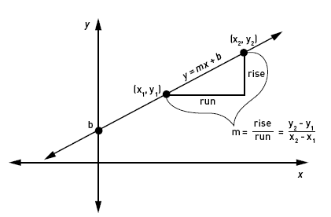
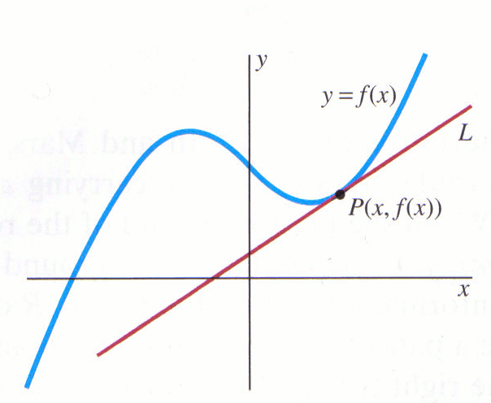

The word Calculus comes from Latin meaning "small stone",
Because it is like understanding something by looking at small pieces.
Differential Calculus cuts something into small pieces to find how it changes.
Integral Calculus joins (integrates) the small pieces together to find how much there is.
Calculus actually consists of two parts: the calculation of the integral and the derivative.
Differentiation is a tool where you can find an object’s velocity and acceleration based on the formula for that object’s position.
Likewise, if you know the object’s velocity you can find that object’s acceleration.
With integration, the opposite is true: you can find an object’s position if you know the object’s velocity or acceleration.
This is illustrated in the following diagram.
In fact, if we want to understand deeply what is derivtion, we must understand what a slope is.
A slope is actually the change in X as a result of the change in Y,
to calculate this change between two points, we use the formula:

The result is the average change of Y relative to X.
However, if we want to use the derived concept to give us conclusions about physics models, function behavior, etc.
we need to know what is derived from a particular point.

We know f(x) = x2, and can calculate f(x+Δx) :
| Start with: | f(x+Δx) = (x+Δx)2 | |
| (x + Δx)2→ | f(x+Δx) = x2 + 2x Δx + (Δx)2 |
| The slope formula is: | (f(x+Δx) - f(x))/ Δx |
| Put in f(x+Δx) and f(x): | (x2 + 2x Δx + (Δx)2 - x2)/ Δx |
| Simplify (x2 and -x2 cancel): | (2x Δx + (Δx)2)/ Δx |
| Simplify more (divide through by Δx): | = 2x + Δx |
| And then as Δx heads towards 0 we get: | = 2x |
Result: the derivative of x2 is 2x
In the next section, you can dynamically see the relationship between a function and the functions derived from it. Try changing the function by moving the points A, B, C and see what happens to the functions derived from it.
In addition, the model shows one of the significant applications of the integral, ie the calculation of the area under the graph. Move the red dot to see how the Calculated area changes, or press start to let the space change dynamically.